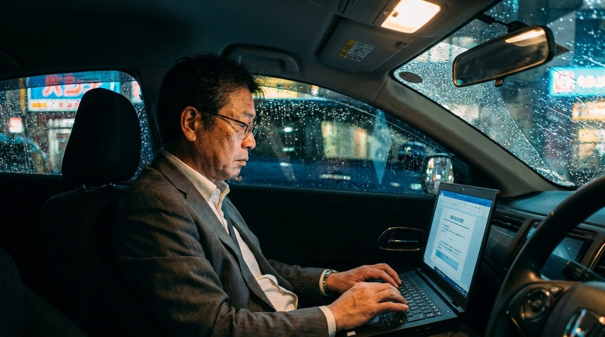

この90分が、
あとの20年の営業を変える。
提案書は2分。フォローは面談のあとすぐ。お客様は、向こうから。
移動ゼロで回っている営業を、画面の向こうで動かして見せます。
見ているだけで大丈夫です。使うかどうかは、見てから決めてください。
会社がAIを配る前に、自分のAIを自分で持った人から、面談と紹介が増え始めています。
出典: 日本経済新聞 2025年報道／生命保険協会・生命保険文化センター調査（金融庁提出資料 2022）

これは「がんばり方」の話ではありません。
営業の回し方を変える話です。
お客様は先に、ネットとAIで調べてから会いに来ます。
長い説明は求めていません。短く的確な提案と、そのあとのフォローを求めています。
お客様と話すこと、決めること。そこはあなたのままです。
その前後にある「調べる・書く・整える・送る」を、AIが代わりにやります。
お客様探しを、AIにどう任せるか向こうから予約が入る入口の、実物
提案書とフォロー文が、面談のあと2分で届く仕組みその場で動かします
自分の仕事の、どこから任せるか質問の時間で、あなたの場合を一緒に見ます
売り込みはしません。
勉強会のあと、希望する方だけ、個別相談（無料・オンライン）で自分の場合を相談できます。
出典: fulfull株式会社 お金の相談・予約フォーム（STORES予約）のレビュー。原文のまま。お名前は伏せています。
画面越しでも、信頼は作れます。
「押し売りされない」「落ち着いて話せる」と感じてもらいやすい。これが、オンラインに切り替えて分かったことです。
下のボタンを押す申込フォームが開きます
日程を選んで、お名前とメールを入れるその場で受付メールが届きます
前日にZoomのURLが届く当日は時間になったら開くだけ
3つの日程から選んで、お名前とメールアドレスだけで申込完了。
ZoomのURLは前日にメールでお送りします。
見ているだけで大丈夫です。使うかどうかは、見てから決めてください。

面談も集客も、オンラインとAIで回しています。
特別な才能ではなく、「何を、どの順番でAIに渡すか」を決めただけです。その決め方を、当日お見せします。
スマホだけで始められます。当日お渡しする設定文は「コピーして貼る」だけです。難しい設定や、専門用語の説明会はしません。
勉強会は無料で、売り込みはしません。最後に、希望する方だけに個別相談の案内を1枚お見せします。要らなければそのまま閉じていただいて大丈夫です。
必須ではありません。質問はチャットでも受け付けます。カメラはオンでのご参加をお願いしています。
受付メールに返信するか、LINEに一言送ってください。ほかの日程に振り替えます。